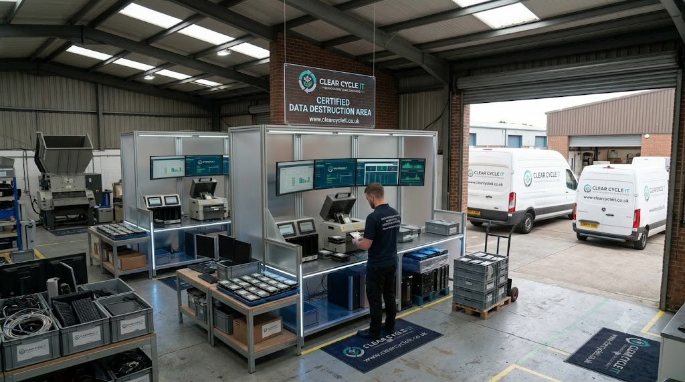
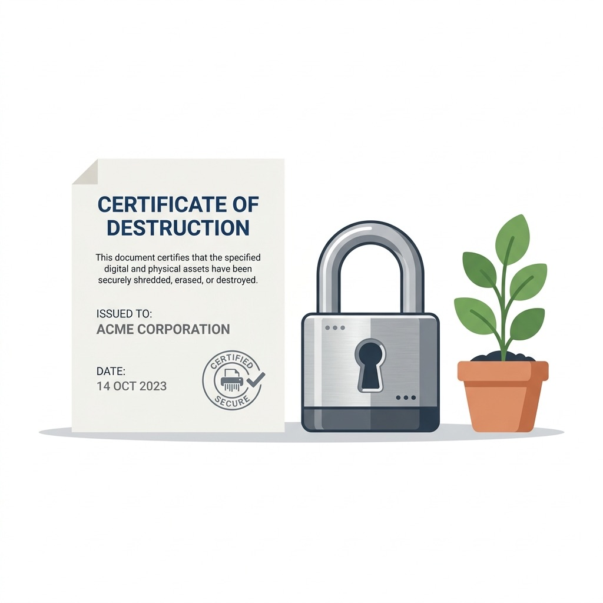

Certified physical media shredding, degaussing, and data sanitisation audits for UK businesses.
Hard drives store some of a company's most sensitive information, such as client records and financial paperwork. When a drive reaches the end of its life, it must be treated with care. Clear Cycle IT provides hard drive disposal that UK businesses can rely on. Not only do we retrieve your old equipment for you – but we also take care of the data that may be stored on them too, providing detailed records of what has been dealt with.
Whether you’re looking to get rid of just a few laptops or an entire room’s worth of servers, we are able to plan how best to collect all of this equipment from your premises according to your schedule.

This means deleting your files – either by just simply hitting delete or even formatting a drive – doesn’t necessarily mean you’ve removed that data from the hard drive forever as it’s easy to recover using some basic software. And let’s face it, there could well have been old data on those drives, including emails, customer details or staff records.
Our service gives you a secure way to remove drives from your site. We provide documents so you can keep a record of what was collected.
Shredding involves physically destroying your drive by breaking it into little pieces such that no one can ever retrieve your data from it. This is usually used on drives that have some issues (faulty), are really old, or contain highly sensitive data.
Different drives require different types of destruction because, for instance, solid-state drives don’t save data just like the good-old-hard-drives. So we pick our method depending on what kind of drive you are giving us.
If a drive or device is still operational, it may be eligible for reuse following secure wiping. Items that can't be reused are ethically recycled. This eliminates electronic waste while recovering useful resources.
We collect:
If you are not sure whether we can take an item, send us a list and we will confirm.
UK law does not name one single method for destroying a hard drive. It expects you to keep personal data secure and to be able to show what you did. Standards help you do this. These are the ones you will see most often:
We deal with everything from small clear-outs to large projects involving several rooms or sites – especially where there’s equipment spread out over different parts of an organisation, including offices, meeting rooms, storage areas and server rooms.
Before starting on any project, our teams will carry out a full review of all equipment, site details and your preferred timescales to make sure that every stage of the process goes without a hitch.
Old equipment takes up space your business could use. We discuss what needs to be removed and plan the collection to keep disruption to your staff low.
System upgrades create a lot of work for your IT team. We can take care of collecting and processing all your old equipment, including arranging secure data destruction if required (and providing detailed records).
If your business has more than one site, please contact us to discuss your volumes and timings.
The right provider helps you manage old equipment with confidence. When you compare hard drive shredding UK suppliers and other disposal services, these are the points that matter most.
Our secure hard drive destruction UK service uses secure methods to protect data on your devices. We can wipe or destroy data, depending on the equipment and its condition.
You can book a collection without asking your staff to manage every step. We plan the work around your equipment and your site.
When needed, we provide asset reports, waste transfer notes and certificates of destruction. These records support your own audits and the hard drive destruction standards UK organisations are expected to follow.
We keep useful equipment in use wherever possible. Items that cannot be reused are sent for responsible recycling.
Our hard drive destruction UK coverage reaches eligible organisations across mainland UK. Collection arrangements depend on your location, your equipment and the minimum collection requirement.
Our process is simple and easy to follow.
Related reading: onsite vs offsite hard drive shredding, secure data destruction, IT asset disposal and WEEE recycling.
Old drives should not sit in a cupboard. Clear Cycle IT can help you arrange a collection, protect stored information, and manage unwanted equipment responsibly.
Our team is here to talk through your equipment and see how we can assist. From cleaning one room to planning a big upgrade, let us know what steps you'd like to take.
Contact Clear Cycle IT to discuss your collection and request a booking.
We accept hard drives, desktops, laptops, monitors, tablets, printers, servers, networking gear and accessories. Drop us a list of your stuff to find out whether we can recycle it!
Suitable drives are then wiped with secure hard drive destruction UK methods. If the drive is not suitable for wiping, we will destroy the data safely and issue a certificate of destruction to ensure our work is properly documented for your own records.
Most commonly these days, either NIST SP 800-88 or BS EN 15713. Always ask your provider which standard their processes adhere to, and hold on to the certificate they provide.
Yes - If you are an eligible business (at least 10 Major IT Items), please contact us by phone or e-mail to check if there are any associated costs to the collection of your IT items.
Yes! We also give you asset reports, waste transfer note, collection summary report & certificate of destruction depending on what services/equipment requested.
Just send us your address and details of all your major IT stuff, including estimates for how much of each you have. Our team will then go through your request and help explain the next steps to you.
Last Updated: 27th October 2026
Hard drive destruction is the physical shredding or crushing of digital storage devices. Examples of destroyed media include SATA hard disks, NVMe solid-state drives, backup tapes, and optical discs.
Clearcycle IT executes this service to ensure that corporate data is unrecoverable. This physical rendering process prevents forensic data recovery and guarantees total compliance with data privacy regulations.

UK corporate entities must manage obsolete data-bearing media in accordance with the UK GDPR and the Data Protection Act 2018. Clearcycle IT operates under the ISO 27001 Information Security Management System, which establishes clear controls for handling sensitive data.
These frameworks require businesses to document the complete chain of custody for all storage devices from collection to final destruction. Failing to maintain this auditable record exposes organisations to severe financial penalties and data breaches.
The NIST SP 800-88 Rev. 1 Guidelines for Media Sanitisation outline three core methods for processing data-bearing assets. These levels define the security threshold of the sanitisation process:
For modern solid-state drives (SSDs), physical shredding presents a unique mechanical challenge. Traditional magnetic drives store data on spinning platters, which can be disabled by warping the disk. In contrast, SSDs store information on tiny silicon NAND flash memory chips. If an SSD is shredded using a standard 40mm blade width, individual memory chips can pass through unscathed, leaving active data completely intact.
To counter this risk, Clearcycle IT utilizes specialized micro-shredders that disintegrate solid-state media into 2mm to 9mm particles. This process fractures the silicon structures of the flash memory chips, rendering any data recovery mathematically impossible and fully satisfying high-security auditing standards.
| Media Type | Standard Sanitisation Method | Physical Destruction Size Limit |
|---|---|---|
| Magnetic Hard Drives (HDD) | Software Overwrite or Degaussing | 40mm shred width (completely distorts magnetic platters) |
| Solid State Drives (SSD) | Cryptographic Erase or Physical Shredding | 2mm to 9mm particle size (disintegrates flash memory chips) |
| Magnetic Backup Tapes | High-coercivity degaussing or physical shredding | 15mm shred width (destroys continuity of magnetic tape ribbon) |
| Optical Media | Physical cross-cut shredding or incineration | 5mm particle size (fractures polycarbonate layers) |
Our physical drive shredding process operates under a strict 4-step chain-of-custody sequence. This ensures that no active data leaves our possession undocumented:
Organisations must evaluate operational priorities when choosing their destruction workflow. On-site drive crushing involves deploying a mobile vehicle to your office, allowing your security team to physically witness the destruction. This method eliminates the transit risk of active data-bearing media, as the drives are rendered useless before leaving your facility.
Off-site shredding utilizes our secure facility, which provides higher throughput and lower costs. All drives are secured in locked bins during transport. For a detailed risk analysis comparing these two methods, please read our on-site vs off-site hard drive shredding comparison guide.
Regardless of the chosen method, all metals are separated post-shredding for recycling. Casings, platters, and circuitry are smelted to recover raw materials. Examples of recovered metals include copper, steel, and aluminum. These reclaimed materials are returned to manufacturing loops, avoiding the carbon-heavy extraction of virgin ores. Clearcycle IT tracks these weights and issues carbon offset metrics for B2B environmental audits, ensuring your data destruction complies with both data safety laws and circular economy targets. To read more about WEEE environmental regulations, visit our data destruction guide.
Contact Clearcycle IT today to schedule your certified on-site drive crushing or secure off-site shredding clearance.